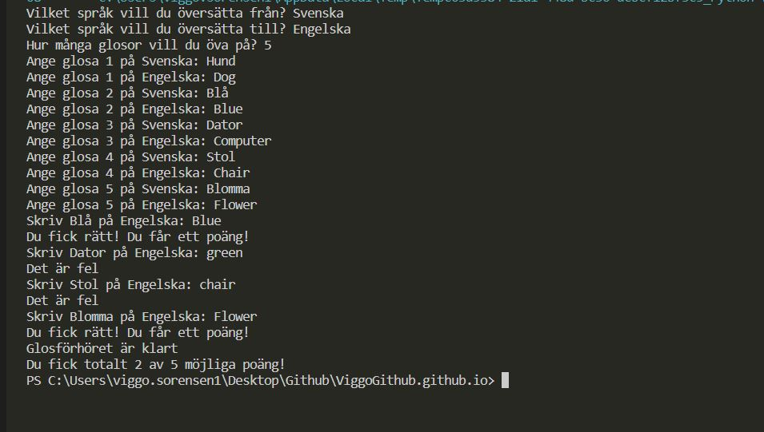
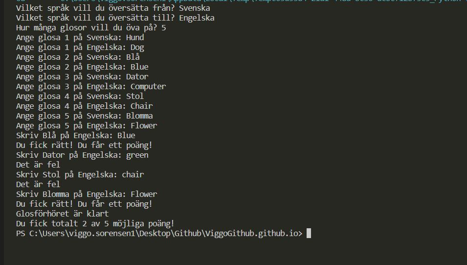
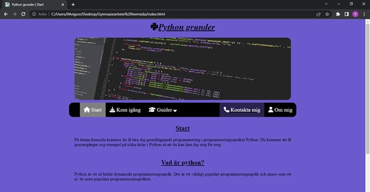
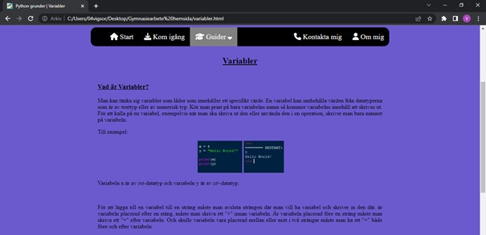
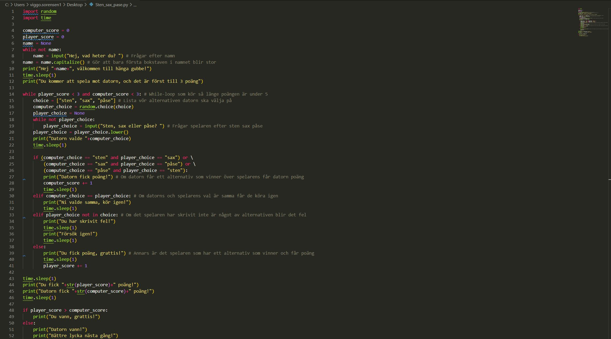
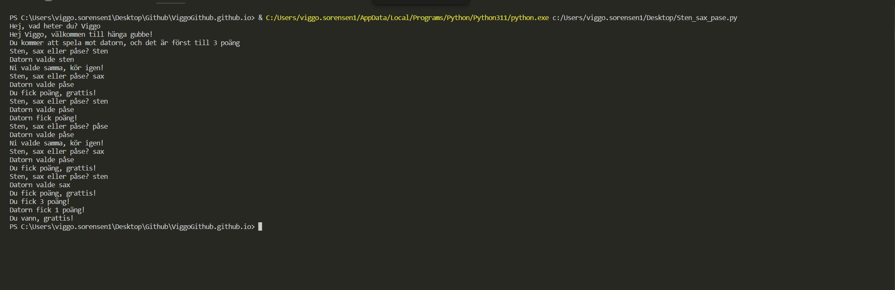

Glosförhör i Python
Projekt i programmeringsspråket Python som jag gjorde som slutprojekt i kursen programmering 1.
 

Hemsida: Python grunder
En hemsida jag gjorde som gymnasiearbete och slutprojekt i kursen Webbutveckling 1.
 Sten, sax, påse i Python
Projekt i programmeringsspråket Python
 